library(dplyr)
library(ggplot2)
library(nycflights13)16 Learning Check Solutions
Here are the solutions to all Learning Checks throughout the book.
16.1 Chapter 1 Solutions
(LC1.1) Repeat the above installing steps, but for the dplyr, nycflights13, and knitr packages. This will install the earlier mentioned dplyr package, the nycflights13 package containing data on all domestic flights leaving a NYC airport in 2013, and the knitr package for writing reports in R.
(LC1.2) “Load” the dplyr, nycflights13, and knitr packages as well by repeating the above steps.
Solution: If the following code runs with no errors, you’ve succeeded!
library(dplyr)
library(nycflights13)
library(knitr)(LC1.3) What does any ONE row in this flights dataset refer to?
- A. Data on an airline
- B. Data on a flight
- C. Data on an airport
- D. Data on multiple flights
Solution: This is data on a flight. Not a flight path! Example:
- a flight path would be United 1545 to Houston
- a flight would be United 1545 to Houston at a specific date/time. For example: 2013/1/1 at 5:15am.
(LC1.4) What are some examples in this dataset of categorical variables? What makes them different than quantitative variables?
Solution: Hint: Type ?flights in the console to see what all the variables mean!
- Categorical:
carrierthe companydestthe destinationflightthe flight number. Even though this is a number, it’s simply a label. Example: United 1545 is not less than United 1714
- Quantitative:
distancethe distance in milestime_hourtime
(LC1.5) What properties of the observational unit do each of lat, lon, alt, tz, dst, and tzone describe for the airports data frame? Note that you may want to use ?airports to get more information.
Solution: lat and lon represent the airport geographic coordinates, alt is the altitude above sea level of the airport (Run airports %>% filter(faa == "DEN") to see the altitude of Denver International Airport), tz is the time zone difference with respect to GMT in London UK, dst is the daylight savings time zone, and tzone is the time zone label.
(LC1.6) Provide the names of variables in a data frame with at least three variables in which one of them is an identification variable and the other two are not. In other words, create your own tidy dataset that matches these conditions.
Solution:
- In the
weatherexample in LC2.8, the combination oforigin,year,month,day,hourare identification variables as they identify the observation in question. - Anything else pertains to observations:
temp,humid,wind_speed, etc.
16.2 Chapter 2 Solutions
library(nycflights13)
library(ggplot2)
library(dplyr)(LC2.1) Take a look at both the flights data frame from the nycflights13 package and the alaska_flights data frame from the moderndive package by running View(flights) and View(alaska_flights). In what respect do these data frames differ? For example, think about the number of rows in each dataset.
Solution: flights contains all flight data, while alaska_flights contains only data from Alaskan carrier “AS”. We can see that flights has 336776 rows while alaska_flights has only 714.
(LC2.2) What are some practical reasons why dep_delay and arr_delay have a positive relationship?
Solution: The later a plane departs, typically the later it will arrive.
(LC2.3) What variables in the weather data frame would you expect to have a negative correlation (i.e. a negative relationship) with dep_delay? Why? Remember that we are focusing on numerical variables here. Hint: Explore the weather dataset by using the View() function.
Solution: An example in the weather dataset is visibility, which measures visibility in miles. As visibility increases, we would expect departure delays to decrease.
(LC2.4) Why do you believe there is a cluster of points near (0, 0)? What does (0, 0) correspond to in terms of the Alaskan flights?
Solution: The point (0,0) means no delay in departure nor arrival. From the point of view of Alaska airlines, this means the flight was on time. It seems most flights are at least close to being on time.
(LC2.5) What are some other features of the plot that stand out to you?
Solution: Different people will answer this one differently. One answer is most flights depart and arrive less than an hour late.
(LC2.6) Create a new scatterplot using different variables in the alaska_flights data frame by modifying the example above.
Solution: Many possibilities for this one, see the plot below. Is there a pattern in departure delay depending on when the flight is scheduled to depart? Interestingly, there seems to be only two blocks of time where flights depart.
ggplot(data = alaska_flights, mapping = aes(x = dep_time, y = dep_delay)) +
geom_point()Warning: Removed 2 rows containing missing values or values outside the scale range
(`geom_point()`).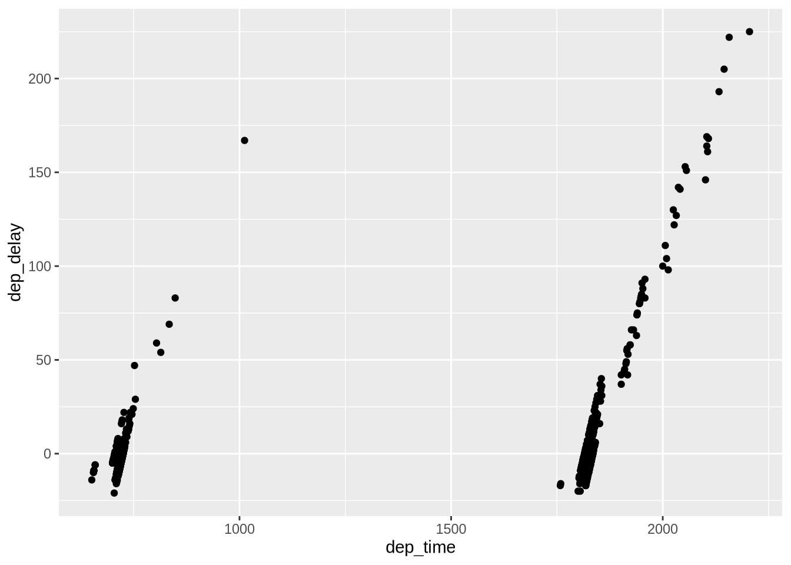
(LC2.7) Why is setting the alpha argument value useful with scatterplots? What further information does it give you that a regular scatterplot cannot?
Solution: It thins out the points so we address overplotting. But more importantly it hints at the (statistical) density and distribution of the points: where are the points concentrated, where do they occur.
(LC2.8) After viewing the Figure @ref(fig:alpha) above, give an approximate range of arrival delays and departure delays that occur the most frequently. How has that region changed compared to when you observed the same plot without the alpha = 0.2 set in Figure @ref(fig:noalpha)?
Solution: The lower plot suggests that most Alaska flights from NYC depart between 12 minutes early and on time and arrive between 50 minutes early and on time.
(LC2.9) Take a look at both the weather data frame from the nycflights13 package and the early_january_weather data frame from the moderndive package by running View(weather) and View(early_january_weather). In what respect do these data frames differ?
Solution: The rows of early_january_weather are a subset of weather.
(LC2.10) View() the flights data frame again. Why does the time_hour variable uniquely identify the hour of the measurement whereas the hour variable does not?
Solution: Because to uniquely identify an hour, we need the year/month/day/hour sequence, whereas there are only 24 possible hours.
(LC2.11) Why should linegraphs be avoided when there is not a clear ordering of the horizontal axis?
Solution: Because lines suggest connectedness and ordering.
(LC2.12) Why are linegraphs frequently used when time is the explanatory variable?
Solution: Because time is sequential: subsequent observations are closely related to each other.
(LC2.13) Plot a time series of a variable other than temp for Newark Airport in the first 15 days of January 2013.
Solution: Humidity is a good one to look at, since this is very closely related to the cycles of a day.
ggplot(data = early_january_weather, mapping = aes(x = time_hour, y = humid)) +
geom_line()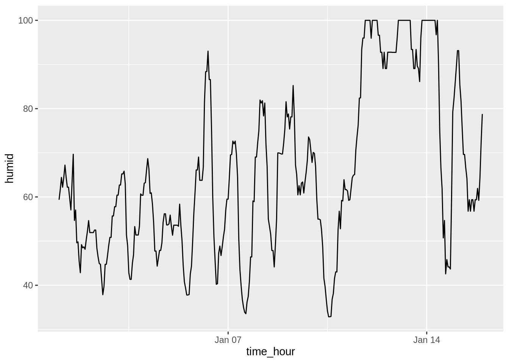
(LC2.14) What does changing the number of bins from 30 to 40 tell us about the distribution of temperatures?
Solution: The distribution doesn’t change much. But by refining the bin width, we see that the temperature data has a high degree of accuracy. What do I mean by accuracy? Looking at the temp variable by View(weather), we see that the precision of each temperature recording is 2 decimal places.
(LC2.15) Would you classify the distribution of temperatures as symmetric or skewed?
Solution: It is rather symmetric, i.e. there are no long tails on only one side of the distribution.
(LC2.16) What would you guess is the “center” value in this distribution? Why did you make that choice?
Solution: The center is around 55.2603921°F. By running the summary() command, we see that the mean and median are very similar. In fact, when the distribution is symmetric the mean equals the median.
(LC2.17) Is this data spread out greatly from the center or is it close? Why?
Solution: This can only be answered relatively speaking! Let’s pick things to be relative to Seattle, WA temperatures:
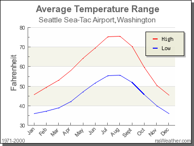
While, it appears that Seattle weather has a similar center of 55°F, its temperatures are almost entirely between 35°F and 75°F for a range of about 40°F. Seattle temperatures are much less spread out than New York i.e. much more consistent over the year. New York on the other hand has much colder days in the winter and much hotter days in the summer. Expressed differently, the middle 50% of values, as delineated by the interquartile range is 30°F.
(LC2.18) What other things do you notice about the faceted plot above? How does a faceted plot help us see relationships between two variables?
Solution:
- Certain months have much more consistent weather (August in particular), while others have crazy variability like January and October, representing changes in the seasons.
- Because we see
temprecordings split bymonth, we are considering the relationship between these two variables. For example, for summer months, temperatures tend to be higher. (LC2.19) What do the numbers 1-12 correspond to in the plot above? What about 25, 50, 75, 100?
Solution:
- They correspond to the month of the flight. While month is technically a number between 1-12, we’re viewing it as a categorical variable here. Specifically, this is an ordinal categorical variable since there is an ordering to the categories.
- 25, 50, 75, 100 are temperatures.
(LC2.20) For which types of datasets would these types of faceted plots not work well in comparing relationships between variables? Give an example describing the nature of these variables and other important characteristics.
Solution:
- It would not work if we had a very large number of facets. For example, if we faceted by individual days rather than months, as we would have 365 facets to look at. When considering all days in 2013, it could be argued that we shouldn’t care about day-to-day fluctuation in weather so much, but rather month-to-month fluctuations, allowing us to focus on seasonal trends.
(LC2.21) Does the temp variable in the weather dataset have a lot of variability? Why do you say that?
Solution: Again, like in LC (LC2.17), this is a relative question. I would say yes, because in New York City, you have 4 clear seasons with different weather. Whereas in Seattle WA and Portland OR, you have two seasons: summer and rain!
(LC2.22) What does the dot at the bottom of the plot for May correspond to? Explain what might have occurred in May to produce this point.
Solution: It appears to be an outlier. Let’s revisit the use of the filter command to hone in on it. We want all data points where the month is 5 and temp<25.
weather %>%
filter(month == 5 & temp < 25)# A tibble: 1 × 15
origin year month day hour temp dewp humid wind_dir wind_speed wind_gust
<chr> <int> <int> <int> <int> <dbl> <dbl> <dbl> <dbl> <dbl> <dbl>
1 JFK 2013 5 8 22 13.1 12.0 95.3 80 8.06 NA
# ℹ 4 more variables: precip <dbl>, pressure <dbl>, visib <dbl>,
# time_hour <dttm>There appears to be only one hour and only at JFK that recorded 13.1 F (-10.5 C) in the month of May. This is probably a data entry mistake! Why wasn’t the weather at least similar at EWR (Newark) and LGA (LaGuardia)?
(LC2.23) Which months have the highest variability in temperature? What reasons do you think this is?
Solution: We are now interested in the spread of the data. One measure some of you may have seen previously is the standard deviation. But in this plot we can read off the Interquartile Range (IQR):
- The distance from the 1st to the 3rd quartiles i.e. the length of the boxes
- You can also think of this as the spread of the middle 50% of the data
Just from eyeballing it, it seems
- November has the biggest IQR, i.e. the widest box, so has the most variation in temperature
- August has the smallest IQR, i.e. the narrowest box, so is the most consistent temperature-wise
Here’s how we compute the exact IQR values for each month (we’ll see this more in depth Chapter @ref(wrangling) of the text):
groupthe observations bymonththen- for each
group, i.e.month,summarizeit by applying the summary statistic functionIQR(), while making sure to skip over missing data viana.rm=TRUEthen arrangethe table indescending order ofIQR
weather %>%
group_by(month) %>%
summarize(IQR = IQR(temp, na.rm = TRUE)) %>%
arrange(desc(IQR))| month | IQR |
|---|---|
| 11 | 16.02 |
| 12 | 14.04 |
| 1 | 13.77 |
| 9 | 12.06 |
| 4 | 12.06 |
| 5 | 11.88 |
| 6 | 10.98 |
| 10 | 10.98 |
| 2 | 10.08 |
| 7 | 9.18 |
| 3 | 9.00 |
| 8 | 7.02 |
(LC2.24) We looked at the distribution of the numerical variable temp split by the numerical variable month that we converted to a categorical variable using the factor() function. Why would a boxplot of temp split by the numerical variable pressure similarly converted to a categorical variable using the factor() not be informative?
Solution: Because there are 12 unique values of month yielding only 12 boxes in our boxplot. There are many more unique values of pressure (469 unique values in fact), because values are to the first decimal place. This would lead to 469 boxes, which is too many for people to digest.
(LC2.25) Boxplots provide a simple way to identify outliers. Why may outliers be easier to identify when looking at a boxplot instead of a faceted histogram?
Solution: In a histogram, the bin corresponding to where an outlier lies may not by high enough for us to see. In a boxplot, they are explicitly labelled separately.
(LC2.26) Why are histograms inappropriate for visualizing categorical variables?
Solution: Histograms are for numerical variables i.e. the horizontal part of each histogram bar represents an interval, whereas for a categorical variable each bar represents only one level of the categorical variable.
(LC2.27) What is the difference between histograms and barplots?
Solution: See above.
(LC2.28) How many Envoy Air flights departed NYC in 2013?
Solution: Envoy Air is carrier code MQ and thus 26397 flights departed NYC in 2013.
(LC2.29) What was the seventh highest airline in terms of departed flights from NYC in 2013? How could we better present the table to get this answer quickly?
Solution: The answer is US, AKA U.S. Airways, with 20536 flights. However, picking out the seventh highest airline when the rows are sorted alphabetically by carrier code is difficult. This would be easier to do if the rows were sorted by number. We’ll learn how to do this in Chapter @ref(wrangling) on data wrangling.
(LC2.30) Why should pie charts be avoided and replaced by barplots?
Solution: In our opinion, comparisons using horizontal lines are easier than comparing angles and areas of circles.
(LC2.31) What is your opinion as to why pie charts continue to be used?
Solution: In our opinion, pie charts are generally considered as a poorer method for communicating data than bar charts. People’s brains are not as good at comparing the size of angles because there is no scale, and in comparison, it is much easier to compare the heights of bars in a bar chart. However, in some circumstances, for example, when representing 25% and 75% of a sample size, if we have 2 bars, in which the higher one is three times in height of the other one, it is difficult to tell the scale of their comparison without labels. But in a bar chart, it would be easy to compare if a circle is divided by 75% and 25%. (Read more at: https://www.displayr.com/why-pie-charts-are-better-than-bar-charts/)
(LC2.32) What kinds of questions are not easily answered by looking at the above figure?
Solution: Because the red, green, and blue bars don’t all start at 0 (only red does), it makes comparing counts hard.
(LC2.33) What can you say, if anything, about the relationship between airline and airport in NYC in 2013 in regards to the number of departing flights?
Solution: The different airlines prefer different airports. For example, United is mostly a Newark carrier and JetBlue is a JFK carrier. If airlines didn’t prefer airports, each color would be roughly one third of each bar.
(LC2.34) Why might the side-by-side (AKA dodged) barplot be preferable to a stacked barplot in this case?
Solution: We can easily compare the different airports for a given carrier using a single comparison line i.e. things are lined up
(LC2.35) What are the disadvantages of using a side-by-side (AKA dodged) barplot, in general?
Solution: It is hard to get totals for each airline.
(LC2.36) Why is the faceted barplot preferred to the side-by-side and stacked barplots in this case?
Solution: Not that different than using side-by-side; depends on how you want to organize your presentation.
(LC2.37) What information about the different carriers at different airports is more easily seen in the faceted barplot?
Solution: Now we can also compare the different carriers within a particular airport easily too. For example, we can read off who the top carrier for each airport is easily using a single horizontal line.
16.3 Chapter 3 Solutions
library(dplyr)
library(ggplot2)
library(nycflights13)(LC3.1) What’s another way using the “not” operator ! to filter only the rows that are not going to Burlington, VT nor Seattle, WA in the flights data frame? Test this out using the code above.
Solution:
# Original in book
not_BTV_SEA <- flights %>%
filter(!(dest == "BTV" | dest == "SEA"))
# Alternative way
not_BTV_SEA <- flights %>%
filter(!dest == "BTV" & !dest == "SEA")
# Yet another way
not_BTV_SEA <- flights %>%
filter(dest != "BTV" & dest != "SEA")(LC3.2) Say a doctor is studying the effect of smoking on lung cancer for a large number of patients who have records measured at five year intervals. She notices that a large number of patients have missing data points because the patient has died, so she chooses to ignore these patients in her analysis. What is wrong with this doctor’s approach?
Solution: The missing patients may have died of lung cancer! So to ignore them might seriously bias your results! It is very important to think of what the consequences on your analysis are of ignoring missing data! Ask yourself:
- There is a systematic reason why certain values are missing? If so, you might be biasing your results!
- If there isn’t, then it might be ok to “sweep missing values under the rug.”
(LC3.3) Modify the above summarize function to create summary_temp to also use the n() summary function: summarize(count = n()). What does the returned value correspond to?
Solution: It corresponds to a count of the number of observations/rows:
weather %>%
summarize(count = n())# A tibble: 1 × 1
count
<int>
1 26115(LC3.4) Why doesn’t the following code work? Run the code line by line instead of all at once, and then look at the data. In other words, run summary_temp <- weather %>% summarize(mean = mean(temp, na.rm = TRUE)) first.
summary_temp <- weather %>%
summarize(mean = mean(temp, na.rm = TRUE)) %>%
summarize(std_dev = sd(temp, na.rm = TRUE))Solution: Consider the output of only running the first two lines:
weather %>%
summarize(mean = mean(temp, na.rm = TRUE))# A tibble: 1 × 1
mean
<dbl>
1 55.3Because after the first summarize(), the variable temp disappears as it has been collapsed to the value mean. So when we try to run the second summarize(), it can’t find the variable temp to compute the standard deviation of.
(LC3.5) Recall from Chapter @ref(viz) when we looked at plots of temperatures by months in NYC. What does the standard deviation column in the summary_monthly_temp data frame tell us about temperatures in New York City throughout the year?
Solution:
| month | mean | std_dev |
|---|---|---|
| 1 | 35.63566 | 10.224635 |
| 2 | 34.27060 | 6.982378 |
| 3 | 39.88007 | 6.249278 |
| 4 | 51.74564 | 8.786168 |
| 5 | 61.79500 | 9.681644 |
| 6 | 72.18400 | 7.546371 |
| 7 | 80.06622 | 7.119898 |
| 8 | 74.46847 | 5.191615 |
| 9 | 67.37129 | 8.465902 |
| 10 | 60.07113 | 8.846035 |
| 11 | 44.99043 | 10.443805 |
| 12 | 38.44180 | 9.982432 |
The standard deviation is a quantification of spread and variability. We see that the period in November, December, and January has the most variation in weather, so you can expect very different temperatures on different days.
(LC3.6) What code would be required to get the mean and standard deviation temperature for each day in 2013 for NYC?
Solution:
summary_temp_by_day <- weather %>%
group_by(year, month, day) %>%
summarize(
mean = mean(temp, na.rm = TRUE),
std_dev = sd(temp, na.rm = TRUE)
)`summarise()` has regrouped the output.
ℹ Summaries were computed grouped by year, month, and day.
ℹ Output is grouped by year and month.
ℹ Use `summarise(.groups = "drop_last")` to silence this message.
ℹ Use `summarise(.by = c(year, month, day))` for per-operation grouping
(`?dplyr::dplyr_by`) instead.summary_temp_by_day# A tibble: 364 × 5
# Groups: year, month [12]
year month day mean std_dev
<int> <int> <int> <dbl> <dbl>
1 2013 1 1 37.0 4.00
2 2013 1 2 28.7 3.45
3 2013 1 3 30.0 2.58
4 2013 1 4 34.9 2.45
5 2013 1 5 37.2 4.01
6 2013 1 6 40.1 4.40
7 2013 1 7 40.6 3.68
8 2013 1 8 40.1 5.77
9 2013 1 9 43.2 5.40
10 2013 1 10 43.8 2.95
# ℹ 354 more rowsNote: group_by(day) is not enough, because day is a value between 1-31. We need to group_by(year, month, day).
library(dplyr)
library(nycflights13)
summary_temp_by_month <- weather %>%
group_by(month) %>%
summarize(
mean = mean(temp, na.rm = TRUE),
std_dev = sd(temp, na.rm = TRUE)
)(LC3.7) Recreate by_monthly_origin, but instead of grouping via group_by(origin, month), group variables in a different order group_by(month, origin). What differs in the resulting dataset?
Solution:
by_monthly_origin <- flights %>%
group_by(month, origin) %>%
summarize(count = n())`summarise()` has regrouped the output.
ℹ Summaries were computed grouped by month and origin.
ℹ Output is grouped by month.
ℹ Use `summarise(.groups = "drop_last")` to silence this message.
ℹ Use `summarise(.by = c(month, origin))` for per-operation grouping
(`?dplyr::dplyr_by`) instead.by_monthly_origin| month | origin | count |
|---|---|---|
| 1 | EWR | 9893 |
| 1 | JFK | 9161 |
| 1 | LGA | 7950 |
| 2 | EWR | 9107 |
| 2 | JFK | 8421 |
| 2 | LGA | 7423 |
| 3 | EWR | 10420 |
| 3 | JFK | 9697 |
| 3 | LGA | 8717 |
| 4 | EWR | 10531 |
| 4 | JFK | 9218 |
| 4 | LGA | 8581 |
| 5 | EWR | 10592 |
| 5 | JFK | 9397 |
| 5 | LGA | 8807 |
| 6 | EWR | 10175 |
| 6 | JFK | 9472 |
| 6 | LGA | 8596 |
| 7 | EWR | 10475 |
| 7 | JFK | 10023 |
| 7 | LGA | 8927 |
| 8 | EWR | 10359 |
| 8 | JFK | 9983 |
| 8 | LGA | 8985 |
| 9 | EWR | 9550 |
| 9 | JFK | 8908 |
| 9 | LGA | 9116 |
| 10 | EWR | 10104 |
| 10 | JFK | 9143 |
| 10 | LGA | 9642 |
| 11 | EWR | 9707 |
| 11 | JFK | 8710 |
| 11 | LGA | 8851 |
| 12 | EWR | 9922 |
| 12 | JFK | 9146 |
| 12 | LGA | 9067 |
In by_monthly_origin the month column is now first and the rows are sorted by month instead of origin. If you compare the values of count in by_origin_monthly and by_monthly_origin using the View() function, you’ll see that the values are actually the same, just presented in a different order.
(LC3.8) How could we identify how many flights left each of the three airports for each carrier?
Solution: We could summarize the count from each airport using the n() function, which counts rows.
count_flights_by_airport <- flights %>%
group_by(origin, carrier) %>%
summarize(count = n())`summarise()` has regrouped the output.
ℹ Summaries were computed grouped by origin and carrier.
ℹ Output is grouped by origin.
ℹ Use `summarise(.groups = "drop_last")` to silence this message.
ℹ Use `summarise(.by = c(origin, carrier))` for per-operation grouping
(`?dplyr::dplyr_by`) instead.count_flights_by_airport| origin | carrier | count |
|---|---|---|
| EWR | 9E | 1268 |
| EWR | AA | 3487 |
| EWR | AS | 714 |
| EWR | B6 | 6557 |
| EWR | DL | 4342 |
| EWR | EV | 43939 |
| EWR | MQ | 2276 |
| EWR | OO | 6 |
| EWR | UA | 46087 |
| EWR | US | 4405 |
| EWR | VX | 1566 |
| EWR | WN | 6188 |
| JFK | 9E | 14651 |
| JFK | AA | 13783 |
| JFK | B6 | 42076 |
| JFK | DL | 20701 |
| JFK | EV | 1408 |
| JFK | HA | 342 |
| JFK | MQ | 7193 |
| JFK | UA | 4534 |
| JFK | US | 2995 |
| JFK | VX | 3596 |
| LGA | 9E | 2541 |
| LGA | AA | 15459 |
| LGA | B6 | 6002 |
| LGA | DL | 23067 |
| LGA | EV | 8826 |
| LGA | F9 | 685 |
| LGA | FL | 3260 |
| LGA | MQ | 16928 |
| LGA | OO | 26 |
| LGA | UA | 8044 |
| LGA | US | 13136 |
| LGA | WN | 6087 |
| LGA | YV | 601 |
All remarkably similar! Note: the n() function counts rows, whereas the sum(VARIABLE_NAME) function sums all values of a certain numerical variable VARIABLE_NAME.
(LC3.9) How does the filter operation differ from a group_by followed by a summarize?
Solution:
filterpicks out rows from the original dataset without modifying them, whereasgroup_by %>% summarizecomputes summaries of numerical variables, and hence reports new values.
(LC3.10) What do positive values of the gain variable in flights correspond to? What about negative values? And what about a zero value?
Solution:
- Say a flight departed 20 minutes late, i.e.
dep_delay = 20. - Then arrived 10 minutes late, i.e.
arr_delay = 10. - Then
gain = dep_delay - arr_delay = 20 - 10 = 10is positive, so it “made up/gained time in the air.” - 0 means the departure and arrival time were the same, so no time was made up in the air. We see in most cases that the
gainis near 0 minutes. - I never understood this. If the pilot says “we’re going make up time in the air” because of delay by flying faster, why don’t you always just fly faster to begin with?
(LC3.11) Could we create the dep_delay and arr_delay columns by simply subtracting dep_time from sched_dep_time and similarly for arrivals? Try the code out and explain any differences between the result and what actually appears in flights.
Solution: No because you can’t do direct arithmetic on times. The difference in time between 12:03 and 11:59 is 4 minutes, but 1203-1159 = 44
(LC3.12) What can we say about the distribution of gain? Describe it in a few sentences using the plot and the gain_summary data frame values.
Solution: Most of the time the gain is a little above zero (the median is 7, meaning gain is above 0 at least 50% of the time) and between -50 and 50 minutes. There are some extreme cases however!
(LC3.13) Looking at Figure @ref(fig:reldiagram), when joining flights and weather (or, in other words, matching the hourly weather values with each flight), why do we need to join by all of year, month, day, hour, and origin, and not just hour?
Solution: Because hour is simply a value between 0 and 23; to identify a specific hour, we need to know which year, month, day and at which airport.
(LC3.14) What surprises you about the top 10 destinations from NYC in 2013?
Solution: This question is subjective! What surprises me is the high number of flights to Boston. Wouldn’t it be easier and quicker to take the train?
(LC3.15) What are some advantages of data in normal forms? What are some disadvantages?
Solution: When datasets are in normal form, we can easily _join them with other datasets! For example, we can join the flights data with the planes data.
(LC3.16) What are some ways to select all three of the dest, air_time, and distance variables from flights? Give the code showing how to do this in at least three different ways.
Solution:
# The regular way:
flights %>%
select(dest, air_time, distance)# A tibble: 336,776 × 3
dest air_time distance
<chr> <dbl> <dbl>
1 IAH 227 1400
2 IAH 227 1416
3 MIA 160 1089
4 BQN 183 1576
5 ATL 116 762
6 ORD 150 719
7 FLL 158 1065
8 IAD 53 229
9 MCO 140 944
10 ORD 138 733
# ℹ 336,766 more rows# Since they are sequential columns in the dataset
flights %>%
select(dest:distance)# A tibble: 336,776 × 3
dest air_time distance
<chr> <dbl> <dbl>
1 IAH 227 1400
2 IAH 227 1416
3 MIA 160 1089
4 BQN 183 1576
5 ATL 116 762
6 ORD 150 719
7 FLL 158 1065
8 IAD 53 229
9 MCO 140 944
10 ORD 138 733
# ℹ 336,766 more rows# Not as effective, by removing everything else
flights %>%
select(
-year, -month, -day, -dep_time, -sched_dep_time, -dep_delay, -arr_time,
-sched_arr_time, -arr_delay, -carrier, -flight, -tailnum, -origin,
-hour, -minute, -time_hour
)# A tibble: 336,776 × 3
dest air_time distance
<chr> <dbl> <dbl>
1 IAH 227 1400
2 IAH 227 1416
3 MIA 160 1089
4 BQN 183 1576
5 ATL 116 762
6 ORD 150 719
7 FLL 158 1065
8 IAD 53 229
9 MCO 140 944
10 ORD 138 733
# ℹ 336,766 more rows(LC3.17) How could one use starts_with, ends_with, and contains to select columns from the flights data frame? Provide three different examples in total: one for starts_with, one for ends_with, and one for contains.
Solution:
# Anything that starts with "d"
flights %>%
select(starts_with("d"))# A tibble: 336,776 × 5
day dep_time dep_delay dest distance
<int> <int> <dbl> <chr> <dbl>
1 1 517 2 IAH 1400
2 1 533 4 IAH 1416
3 1 542 2 MIA 1089
4 1 544 -1 BQN 1576
5 1 554 -6 ATL 762
6 1 554 -4 ORD 719
7 1 555 -5 FLL 1065
8 1 557 -3 IAD 229
9 1 557 -3 MCO 944
10 1 558 -2 ORD 733
# ℹ 336,766 more rows# Anything related to delays:
flights %>%
select(ends_with("delay"))# A tibble: 336,776 × 2
dep_delay arr_delay
<dbl> <dbl>
1 2 11
2 4 20
3 2 33
4 -1 -18
5 -6 -25
6 -4 12
7 -5 19
8 -3 -14
9 -3 -8
10 -2 8
# ℹ 336,766 more rows# Anything related to departures:
flights %>%
select(contains("dep"))# A tibble: 336,776 × 3
dep_time sched_dep_time dep_delay
<int> <int> <dbl>
1 517 515 2
2 533 529 4
3 542 540 2
4 544 545 -1
5 554 600 -6
6 554 558 -4
7 555 600 -5
8 557 600 -3
9 557 600 -3
10 558 600 -2
# ℹ 336,766 more rows(LC3.18) Why might we want to use the select() function on a data frame?
Solution: To narrow down the data frame, to make it easier to look at. Using View() for example.
(LC3.19) Create a new data frame that shows the top 5 airports with the largest arrival delays from NYC in 2013.
Solution:
top_five <- flights %>%
group_by(dest) %>%
summarize(avg_delay = mean(arr_delay, na.rm = TRUE)) %>%
arrange(desc(avg_delay)) %>%
top_n(n = 5)Selecting by avg_delaytop_five# A tibble: 5 × 2
dest avg_delay
<chr> <dbl>
1 CAE 41.8
2 TUL 33.7
3 OKC 30.6
4 JAC 28.1
5 TYS 24.1(LC3.20) Using the datasets included in the nycflights13 package, compute the available seat miles for each airline sorted in descending order. After completing all the necessary data wrangling steps, the resulting data frame should have 16 rows (one for each airline) and 2 columns (airline name and available seat miles). Here are some hints:
- Crucial: Unless you are very confident in what you are doing, it is worthwhile to not starting coding right away, but rather first sketch out on paper all the necessary data wrangling steps not using exact code, but rather high-level pseudocode that is informal yet detailed enough to articulate what you are doing. This way you won’t confuse what you are trying to do (the algorithm) with how you are going to do it (writing
dplyrcode). - Take a close look at all the datasets using the
View()function:flights,weather,planes,airports, andairlinesto identify which variables are necessary to compute available seat miles. - Figure @ref(fig:reldiagram) above showing how the various datasets can be joined will also be useful.
- Consider the data wrangling verbs in Table @ref(tab:wrangle-summary-table) as your toolbox!
Solution: Here are some examples of student-written pseudocode. Based on our own pseudocode, let’s first display the entire solution.
flights %>%
inner_join(planes, by = "tailnum") %>%
select(carrier, seats, distance) %>%
mutate(ASM = seats * distance) %>%
group_by(carrier) %>%
summarize(ASM = sum(ASM, na.rm = TRUE)) %>%
arrange(desc(ASM))# A tibble: 16 × 2
carrier ASM
<chr> <dbl>
1 UA 15516377526
2 DL 10532885801
3 B6 9618222135
4 AA 3677292231
5 US 2533505829
6 VX 2296680778
7 EV 1817236275
8 WN 1718116857
9 9E 776970310
10 HA 642478122
11 AS 314104736
12 FL 219628520
13 F9 184832280
14 YV 20163632
15 MQ 7162420
16 OO 1299835Let’s now break this down step-by-step. To compute the available seat miles for a given flight, we need the distance variable from the flights data frame and the seats variable from the planes data frame, necessitating a join by the key variable tailnum as illustrated in Figure @ref(fig:reldiagram). To keep the resulting data frame easy to view, we’ll select() only these two variables and carrier:
flights %>%
inner_join(planes, by = "tailnum") %>%
select(carrier, seats, distance)# A tibble: 284,170 × 3
carrier seats distance
<chr> <int> <dbl>
1 UA 149 1400
2 UA 149 1416
3 AA 178 1089
4 B6 200 1576
5 DL 178 762
6 UA 191 719
7 B6 200 1065
8 EV 55 229
9 B6 200 944
10 B6 200 1028
# ℹ 284,160 more rowsNow for each flight we can compute the available seat miles ASM by multiplying the number of seats by the distance via a mutate():
flights %>%
inner_join(planes, by = "tailnum") %>%
select(carrier, seats, distance) %>%
# Added:
mutate(ASM = seats * distance)# A tibble: 284,170 × 4
carrier seats distance ASM
<chr> <int> <dbl> <dbl>
1 UA 149 1400 208600
2 UA 149 1416 210984
3 AA 178 1089 193842
4 B6 200 1576 315200
5 DL 178 762 135636
6 UA 191 719 137329
7 B6 200 1065 213000
8 EV 55 229 12595
9 B6 200 944 188800
10 B6 200 1028 205600
# ℹ 284,160 more rowsNext we want to sum the ASM for each carrier. We achieve this by first grouping by carrier and then summarizing using the sum() function:
flights %>%
inner_join(planes, by = "tailnum") %>%
select(carrier, seats, distance) %>%
mutate(ASM = seats * distance) %>%
# Added:
group_by(carrier) %>%
summarize(ASM = sum(ASM))# A tibble: 16 × 2
carrier ASM
<chr> <dbl>
1 9E 776970310
2 AA 3677292231
3 AS 314104736
4 B6 9618222135
5 DL 10532885801
6 EV 1817236275
7 F9 184832280
8 FL 219628520
9 HA 642478122
10 MQ 7162420
11 OO 1299835
12 UA 15516377526
13 US 2533505829
14 VX 2296680778
15 WN 1718116857
16 YV 20163632However, because for certain carriers certain flights have missing NA values, the resulting table also returns NA’s. We can eliminate these by adding a na.rm = TRUE argument to sum(), telling R that we want to remove the NA’s in the sum. We saw this in Section @ref(summarize):
flights %>%
inner_join(planes, by = "tailnum") %>%
select(carrier, seats, distance) %>%
mutate(ASM = seats * distance) %>%
group_by(carrier) %>%
# Modified:
summarize(ASM = sum(ASM, na.rm = TRUE))# A tibble: 16 × 2
carrier ASM
<chr> <dbl>
1 9E 776970310
2 AA 3677292231
3 AS 314104736
4 B6 9618222135
5 DL 10532885801
6 EV 1817236275
7 F9 184832280
8 FL 219628520
9 HA 642478122
10 MQ 7162420
11 OO 1299835
12 UA 15516377526
13 US 2533505829
14 VX 2296680778
15 WN 1718116857
16 YV 20163632Finally, we arrange() the data in desc()ending order of ASM.
flights %>%
inner_join(planes, by = "tailnum") %>%
select(carrier, seats, distance) %>%
mutate(ASM = seats * distance) %>%
group_by(carrier) %>%
summarize(ASM = sum(ASM, na.rm = TRUE)) %>%
# Added:
arrange(desc(ASM))# A tibble: 16 × 2
carrier ASM
<chr> <dbl>
1 UA 15516377526
2 DL 10532885801
3 B6 9618222135
4 AA 3677292231
5 US 2533505829
6 VX 2296680778
7 EV 1817236275
8 WN 1718116857
9 9E 776970310
10 HA 642478122
11 AS 314104736
12 FL 219628520
13 F9 184832280
14 YV 20163632
15 MQ 7162420
16 OO 1299835While the above data frame is correct, the IATA carrier code is not always useful. For example, what carrier is WN? We can address this by joining with the airlines dataset using carrier is the key variable. While this step is not absolutely required, it goes a long way to making the table easier to make sense of. It is important to be empathetic with the ultimate consumers of your presented data!
flights %>%
inner_join(planes, by = "tailnum") %>%
select(carrier, seats, distance) %>%
mutate(ASM = seats * distance) %>%
group_by(carrier) %>%
summarize(ASM = sum(ASM, na.rm = TRUE)) %>%
arrange(desc(ASM)) %>%
# Added:
inner_join(airlines, by = "carrier")# A tibble: 16 × 3
carrier ASM name
<chr> <dbl> <chr>
1 UA 15516377526 United Air Lines Inc.
2 DL 10532885801 Delta Air Lines Inc.
3 B6 9618222135 JetBlue Airways
4 AA 3677292231 American Airlines Inc.
5 US 2533505829 US Airways Inc.
6 VX 2296680778 Virgin America
7 EV 1817236275 ExpressJet Airlines Inc.
8 WN 1718116857 Southwest Airlines Co.
9 9E 776970310 Endeavor Air Inc.
10 HA 642478122 Hawaiian Airlines Inc.
11 AS 314104736 Alaska Airlines Inc.
12 FL 219628520 AirTran Airways Corporation
13 F9 184832280 Frontier Airlines Inc.
14 YV 20163632 Mesa Airlines Inc.
15 MQ 7162420 Envoy Air
16 OO 1299835 SkyWest Airlines Inc. 16.4 Chapter 4 Solutions
library(dplyr)
library(ggplot2)
library(readr)
library(tidyr)
library(nycflights13)
library(fivethirtyeight)
dem_score <- read_csv("data/dem_score.csv")(LC4.1) What are common characteristics of “tidy” datasets?
Solution: Rows correspond to observations, while columns correspond to variables.
(LC4.2) What makes “tidy” datasets useful for organizing data?
Solution: Tidy datasets are an organized way of viewing data. This format is required for the ggplot2 and dplyr packages for data visualization and wrangling.
(LC4.3) Take a look at the airline_safety data frame included in the fivethirtyeight data. Run the following:
airline_safetyAfter reading the help file by running ?airline_safety, we see that airline_safety is a data frame containing information on different airline companies’ safety records. This data was originally reported on the data journalism website FiveThirtyEight.com in Nate Silver’s article “Should Travelers Avoid Flying Airlines That Have Had Crashes in the Past?”. Let’s ignore the incl_reg_subsidiaries and avail_seat_km_per_week variables for simplicity:
airline_safety_smaller <- airline_safety %>%
select(-c(incl_reg_subsidiaries, avail_seat_km_per_week))
airline_safety_smaller# A tibble: 56 × 7
airline incidents_85_99 fatal_accidents_85_99 fatalities_85_99
<chr> <int> <int> <int>
1 Aer Lingus 2 0 0
2 Aeroflot 76 14 128
3 Aerolineas Argentinas 6 0 0
4 Aeromexico 3 1 64
5 Air Canada 2 0 0
6 Air France 14 4 79
7 Air India 2 1 329
8 Air New Zealand 3 0 0
9 Alaska Airlines 5 0 0
10 Alitalia 7 2 50
# ℹ 46 more rows
# ℹ 3 more variables: incidents_00_14 <int>, fatal_accidents_00_14 <int>,
# fatalities_00_14 <int>This data frame is not in “tidy” format. How would you convert this data frame to be in “tidy” format, in particular so that it has a variable incident_type_years indicating the incident type/year and a variable count of the counts?
Solution:
This can be done using the pivot_longer() function from the tidyr package:
airline_safety_smaller_tidy <- airline_safety_smaller %>%
pivot_longer(
names_to = "incident_type_years",
values_to = "count",
cols = -airline
)
airline_safety_smaller_tidy# A tibble: 336 × 3
airline incident_type_years count
<chr> <chr> <int>
1 Aer Lingus incidents_85_99 2
2 Aer Lingus fatal_accidents_85_99 0
3 Aer Lingus fatalities_85_99 0
4 Aer Lingus incidents_00_14 0
5 Aer Lingus fatal_accidents_00_14 0
6 Aer Lingus fatalities_00_14 0
7 Aeroflot incidents_85_99 76
8 Aeroflot fatal_accidents_85_99 14
9 Aeroflot fatalities_85_99 128
10 Aeroflot incidents_00_14 6
# ℹ 326 more rowsIf you look at the resulting airline_safety_smaller_tidy data frame in the spreadsheet viewer, you’ll see that the variable incident_type_years has 6 possible values: "incidents_85_99", "fatal_accidents_85_99", "fatalities_85_99", "incidents_00_14", "fatal_accidents_00_14", "fatalities_00_14" corresponding to the 6 columns of airline_safety_smaller we tidied.
Note that prior to tidyr version 1.0.0 released to CRAN in September 2019, this could also have been done using the gather() function from the tidyr package:
airline_safety_smaller_tidy <- airline_safety_smaller %>%
gather(key = incident_type_years, value = count, -airline)
airline_safety_smaller_tidy# A tibble: 336 × 3
airline incident_type_years count
<chr> <chr> <int>
1 Aer Lingus incidents_85_99 2
2 Aeroflot incidents_85_99 76
3 Aerolineas Argentinas incidents_85_99 6
4 Aeromexico incidents_85_99 3
5 Air Canada incidents_85_99 2
6 Air France incidents_85_99 14
7 Air India incidents_85_99 2
8 Air New Zealand incidents_85_99 3
9 Alaska Airlines incidents_85_99 5
10 Alitalia incidents_85_99 7
# ℹ 326 more rows(LC4.4) Convert the dem_score data frame into a tidy data frame and assign the name of dem_score_tidy to the resulting long-formatted data frame.
Solution: Running the following in the console:
dem_score_tidy <- dem_score %>%
pivot_longer(
names_to = "year", values_to = "democracy_score",
cols = -country
)
# gather(key = year, value = democracy_score, - country)Let’s now compare the dem_score and dem_score_tidy. dem_score has democracy score information for each year in columns, whereas in dem_score_tidy there are explicit variables year and democracy_score. While both representations of the data contain the same information, we can only use ggplot() to create plots using the dem_score_tidy data frame.
dem_score# A tibble: 96 × 10
country `1952` `1957` `1962` `1967` `1972` `1977` `1982` `1987` `1992`
<chr> <dbl> <dbl> <dbl> <dbl> <dbl> <dbl> <dbl> <dbl> <dbl>
1 Albania -9 -9 -9 -9 -9 -9 -9 -9 5
2 Argentina -9 -1 -1 -9 -9 -9 -8 8 7
3 Armenia -9 -7 -7 -7 -7 -7 -7 -7 7
4 Australia 10 10 10 10 10 10 10 10 10
5 Austria 10 10 10 10 10 10 10 10 10
6 Azerbaijan -9 -7 -7 -7 -7 -7 -7 -7 1
7 Belarus -9 -7 -7 -7 -7 -7 -7 -7 7
8 Belgium 10 10 10 10 10 10 10 10 10
9 Bhutan -10 -10 -10 -10 -10 -10 -10 -10 -10
10 Bolivia -4 -3 -3 -4 -7 -7 8 9 9
# ℹ 86 more rowsdem_score_tidy# A tibble: 864 × 3
country year democracy_score
<chr> <chr> <dbl>
1 Albania 1952 -9
2 Albania 1957 -9
3 Albania 1962 -9
4 Albania 1967 -9
5 Albania 1972 -9
6 Albania 1977 -9
7 Albania 1982 -9
8 Albania 1987 -9
9 Albania 1992 5
10 Argentina 1952 -9
# ℹ 854 more rows(LC4.5) Read in the life expectancy data stored at https://moderndive.com/data/le_mess.csv and convert it to a tidy data frame.
Solution: The code is similar:
life_expectancy <- read_csv("https://moderndive.com/data/le_mess.csv")
life_expectancy_tidy <- life_expectancy %>%
pivot_longer(
names_to = "year",
values_to = "life_expectancy",
cols = -country
)
# gather(key = year, value = life_expectancy, -country)We observe the same construct structure with respect to year in life_expectancy vs life_expectancy_tidy as we did in dem_score vs dem_score_tidy:
life_expectancy# A tibble: 202 × 67
country `1951` `1952` `1953` `1954` `1955` `1956` `1957` `1958` `1959` `1960`
<chr> <dbl> <dbl> <dbl> <dbl> <dbl> <dbl> <dbl> <dbl> <dbl> <dbl>
1 Afghan… 27.1 27.7 28.2 28.7 29.3 29.8 30.3 30.9 31.4 31.9
2 Albania 54.7 55.2 55.8 56.6 57.4 58.4 59.5 60.6 61.8 62.9
3 Algeria 43.0 43.5 44.0 44.4 44.9 45.4 45.9 46.4 47.0 47.5
4 Angola 31.0 31.6 32.1 32.7 33.2 33.8 34.3 34.9 35.4 36.0
5 Antigu… 58.3 58.8 59.3 59.9 60.4 60.9 61.4 62.0 62.5 63.0
6 Argent… 61.9 62.5 63.1 63.6 64.0 64.4 64.7 65 65.2 65.4
7 Armenia 62.7 63.1 63.6 64.1 64.5 65 65.4 65.9 66.4 66.9
8 Aruba 59.0 60.0 61.0 61.9 62.7 63.4 64.1 64.7 65.2 65.7
9 Austra… 68.7 69.1 69.7 69.8 70.2 70.0 70.3 70.9 70.4 70.9
10 Austria 65.2 66.8 67.3 67.3 67.6 67.7 67.5 68.5 68.4 68.8
# ℹ 192 more rows
# ℹ 56 more variables: `1961` <dbl>, `1962` <dbl>, `1963` <dbl>, `1964` <dbl>,
# `1965` <dbl>, `1966` <dbl>, `1967` <dbl>, `1968` <dbl>, `1969` <dbl>,
# `1970` <dbl>, `1971` <dbl>, `1972` <dbl>, `1973` <dbl>, `1974` <dbl>,
# `1975` <dbl>, `1976` <dbl>, `1977` <dbl>, `1978` <dbl>, `1979` <dbl>,
# `1980` <dbl>, `1981` <dbl>, `1982` <dbl>, `1983` <dbl>, `1984` <dbl>,
# `1985` <dbl>, `1986` <dbl>, `1987` <dbl>, `1988` <dbl>, `1989` <dbl>, …life_expectancy_tidy# A tibble: 13,332 × 3
country year life_expectancy
<chr> <chr> <dbl>
1 Afghanistan 1951 27.1
2 Afghanistan 1952 27.7
3 Afghanistan 1953 28.2
4 Afghanistan 1954 28.7
5 Afghanistan 1955 29.3
6 Afghanistan 1956 29.8
7 Afghanistan 1957 30.3
8 Afghanistan 1958 30.9
9 Afghanistan 1959 31.4
10 Afghanistan 1960 31.9
# ℹ 13,322 more rows16.5 Chapter 5 Solutions
library(tidyverse)
library(moderndive)
library(skimr)
library(gapminder)
evals_ch5 <- evals %>% select(ID, score, bty_avg, age)(LC5.1) Conduct a new exploratory data analysis with the same outcome variable \(y\) being score but with age as the new explanatory variable \(x\). Remember, this involves three things:
- Looking at the raw data values.
- Computing summary statistics.
- Creating data visualizations.
What can you say about the relationship between age and teaching scores based on this exploration?
Solution:
- Looking at the raw data values:
glimpse(evals_ch5)Rows: 463
Columns: 4
$ ID <int> 1, 2, 3, 4, 5, 6, 7, 8, 9, 10, 11, 12, 13, 14, 15, 16, 17, 18,…
$ score <dbl> 4.7, 4.1, 3.9, 4.8, 4.6, 4.3, 2.8, 4.1, 3.4, 4.5, 3.8, 4.5, 4.…
$ bty_avg <dbl> 5.000, 5.000, 5.000, 5.000, 3.000, 3.000, 3.000, 3.333, 3.333,…
$ age <int> 36, 36, 36, 36, 59, 59, 59, 51, 51, 40, 40, 40, 40, 40, 40, 40…- Computing summary statistics:
skim_with(numeric = list(hist = NULL), integer = list(hist = NULL))evals_ch5 %>%
select(score, age) %>%
skim()(Note that for formatting purposes, the inline histogram that is usually printed with skim() has been removed. This can be done by running skim_with(numeric = list(hist = NULL), integer = list(hist = NULL)) prior to using the skim() function as well.)
- Creating data visualizations:
ggplot(evals_ch5, aes(x = age, y = score)) +
geom_point() +
labs(
x = "Age", y = "Teaching Score",
title = "Scatterplot of relationship of teaching score and age"
)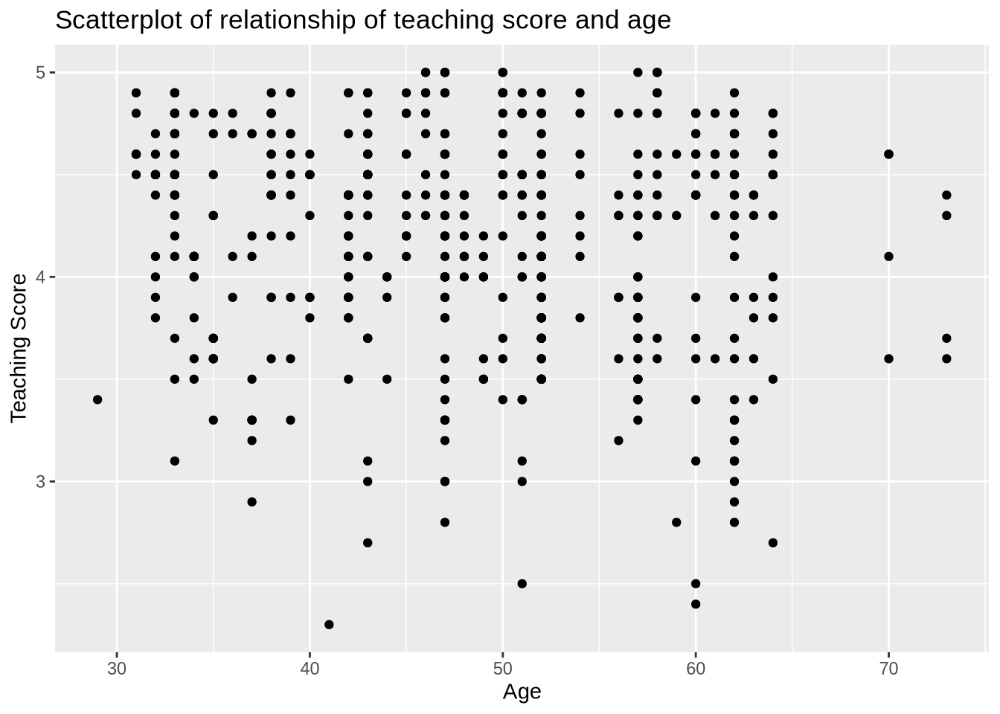
Based on the scatterplot visualization, there seem to have a weak negative relationship between age and teaching score. As age increases, the teaching score see, to decrease slightly.
(LC5.2) Fit a new simple linear regression using lm(score ~ age, data = evals_ch5) where age is the new explanatory variable \(x\). Get information about the “best-fitting” line from the regression table by applying the get_regression_table() function. How do the regression results match up with the results from your earlier exploratory data analysis?
Solution:
# Fit regression model:
score_age_model <- lm(score ~ age, data = evals_ch5)
# Get regression table:
get_regression_table(score_age_model)# A tibble: 2 × 7
term estimate std_error statistic p_value lower_ci upper_ci
<chr> <dbl> <dbl> <dbl> <dbl> <dbl> <dbl>
1 intercept 4.46 0.127 35.2 0 4.21 4.71
2 age -0.006 0.003 -2.31 0.021 -0.011 -0.001\[ \begin{aligned} \widehat{y} &= b_0 + b_1 \cdot x\\ \widehat{\text{score}} &= b_0 + b_{\text{age}} \cdot\text{age}\\ &= 4.462 - 0.006\cdot\text{age} \end{aligned} \]
For every increase of 1 unit in age, there is an associated decrease of, on average, 0.006 units of score. It matches with the results from our earlier exploratory data analysis.
(LC5.3) Generate a data frame of the residuals of the model where you used age as the explanatory \(x\) variable.
Solution:
score_age_regression_points <- get_regression_points(score_age_model)
score_age_regression_points# A tibble: 463 × 5
ID score age score_hat residual
<int> <dbl> <int> <dbl> <dbl>
1 1 4.7 36 4.25 0.452
2 2 4.1 36 4.25 -0.148
3 3 3.9 36 4.25 -0.348
4 4 4.8 36 4.25 0.552
5 5 4.6 59 4.11 0.488
6 6 4.3 59 4.11 0.188
7 7 2.8 59 4.11 -1.31
8 8 4.1 51 4.16 -0.059
9 9 3.4 51 4.16 -0.759
10 10 4.5 40 4.22 0.276
# ℹ 453 more rows(LC5.4) Conduct a new exploratory data analysis with the same explanatory variable \(x\) being continent but with gdpPercap as the new outcome variable \(y\). Remember, this involves three things:
- Most crucially: Looking at the raw data values.
- Computing summary statistics, such as means, medians, and interquartile ranges.
- Creating data visualizations.
What can you say about the differences in GDP per capita between continents based on this exploration?
Solution:
- Looking at the raw data values:
library(gapminder)
gapminder2007 <- gapminder %>%
filter(year == 2007) %>%
select(country, lifeExp, continent, gdpPercap)
glimpse(gapminder2007)Rows: 142
Columns: 4
$ country <fct> "Afghanistan", "Albania", "Algeria", "Angola", "Argentina", …
$ lifeExp <dbl> 43.828, 76.423, 72.301, 42.731, 75.320, 81.235, 79.829, 75.6…
$ continent <fct> Asia, Europe, Africa, Africa, Americas, Oceania, Europe, Asi…
$ gdpPercap <dbl> 974.5803, 5937.0295, 6223.3675, 4797.2313, 12779.3796, 34435…- Computing summary statistics, such as means, medians, and interquartile ranges:
gapminder2007 %>%
select(gdpPercap, continent) %>%
skim()- Creating data visualizations:
ggplot(gapminder2007, aes(x = continent, y = gdpPercap)) +
geom_boxplot() +
labs(
x = "Continent", y = "GPD per capita",
title = "GDP by continent"
)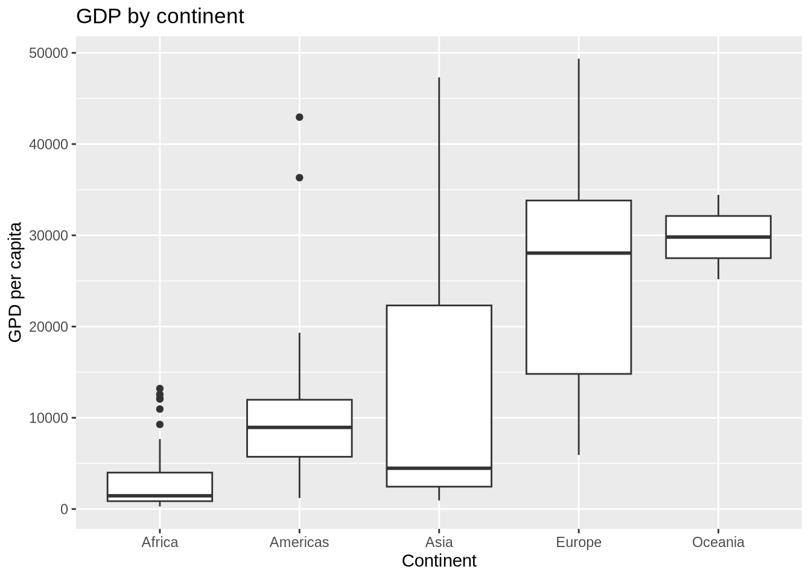
Based on this exploration, it seems that GDP’s are very different among different continents, which means that continent might be a statistically significant predictor for an area’s GDP.
(LC5.5) Fit a new linear regression using lm(gdpPercap ~ continent, data = gapminder2007) where gdpPercap is the new outcome variable \(y\). Get information about the “best-fitting” line from the regression table by applying the get_regression_table() function. How do the regression results match up with the results from your previous exploratory data analysis?
Solution:
# Fit regression model:
gdp_model <- lm(gdpPercap ~ continent, data = gapminder2007)
# Get regression table:
get_regression_table(gdp_model)# A tibble: 5 × 7
term estimate std_error statistic p_value lower_ci upper_ci
<chr> <dbl> <dbl> <dbl> <dbl> <dbl> <dbl>
1 intercept 3089. 1373. 2.25 0.026 375. 5804.
2 continent: Americas 7914. 2409. 3.28 0.001 3150. 12678.
3 continent: Asia 9384. 2203. 4.26 0 5027. 13741.
4 continent: Europe 21965. 2270. 9.68 0 17478. 26453.
5 continent: Oceania 26721. 7133. 3.75 0 12616. 40826.\[ \begin{aligned} \widehat{y} = \widehat{\text{gdpPercap}} &= b_0 + b_{\text{Amer}}\cdot\mathbb{1}_{\mbox{Amer}}(x) + b_{\text{Asia}}\cdot\mathbb{1}_{\mbox{Asia}}(x) + \\ & \qquad b_{\text{Euro}}\cdot\mathbb{1}_{\mbox{Euro}}(x) + b_{\text{Ocean}}\cdot\mathbb{1}_{\mbox{Ocean}}(x)\\ &= 3089 + 7914\cdot\mathbb{1}_{\mbox{Amer}}(x) + 9384\cdot\mathbb{1}_{\mbox{Asia}}(x) + \\ & \qquad 21965\cdot\mathbb{1}_{\mbox{Euro}}(x) + 26721\cdot\mathbb{1}_{\mbox{Ocean}}(x) \end{aligned} \]
In our previous exploratory data analysis, it seemed that continent is a statistically significant predictor for an area’s GDP. Here, by fit a new linear regression using lm(gdpPercap ~ continent, data = gapminder2007) where gdpPercap is the new outcome variable \(y\), we are able to write an equation to predict gdpPercap using the continent as statistically significant predictors. Therefore, the regression results matches with the results from your previous exploratory data analysis.
(LC5.6) Using either the sorting functionality of RStudio’s spreadsheet viewer or using the data wrangling tools you learned in Chapter @ref(wrangling), identify the five countries with the five smallest (most negative) residuals? What do these negative residuals say about their life expectancy relative to their continents?
Solution: Using the sorting functionality of RStudio’s spreadsheet viewer, we can identify that the five countries with the five smallest (most negative) residuals are: Afghanistan, Swaziland, Mozambique, Haiti, and Zambia.
These negative residuals indicate that these data points have the biggest negative deviations from their group means. This means that these five countries’ average life expectancies are the lowest comparing to their respective continents’ average life expectancies. For example, the residual for Afghanistan is \(-26.900\) and it is the smallest residual. This means that the average life expectancy of Afghanistan is \(26.900\) years lower than the average life expectancy of its continent, Asia.
(LC5.7) Repeat this process, but identify the five countries with the five largest (most positive) residuals. What do these positive residuals say about their life expectancy relative to their continents?
Solution: Using either the sorting functionality of RStudio’s spreadsheet viewer, we can identify that the five countries with the five largest (most positive) residuals are: Reunion, Libya, Tunisia, Mauritius, and Algeria.
These positive residuals indicate that the data points are above the regression line with the longest distance. This means that these five countries’ average life expectancies are the highest comparing to their respective continents’ average life expectancies. For example, the residual for Reunion is \(21.636\) and it is the largest residual. This means that the average life expectancy of Reunion is \(21.636\) years higher than the average life expectancy of its continent, Africa.
(LC5.8) Note in the following plot there are 3 points marked with dots along with:
- The “best” fitting solid regression line in blue
- An arbitrarily chosen dotted red line
- Another arbitrarily chosen dashed green line
Warning: Using `size` aesthetic for lines was deprecated in ggplot2 3.4.0.
ℹ Please use `linewidth` instead.`geom_smooth()` using formula = 'y ~ x'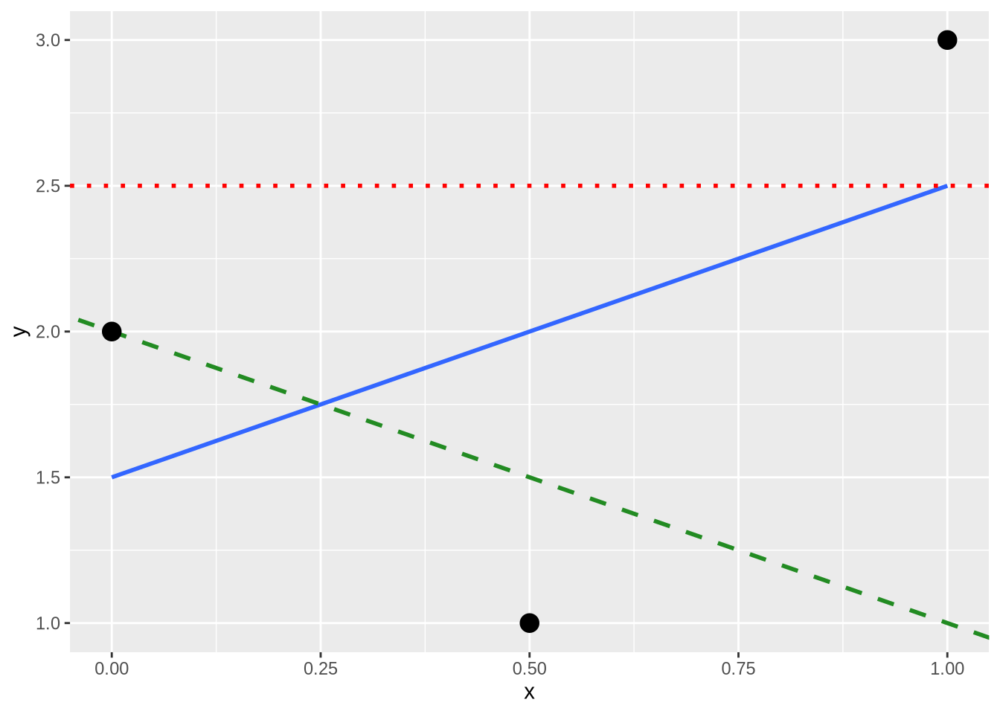
Compute the sum of squared residuals by hand for each line and show that of these three lines, the regression line in blue has the smallest value.
Solution:
- The “best” fitting solid regression line in blue:
\[ \sum_{i=1}^{n}(y_i - \widehat{y}_i)^2 = (2.0-1.5)^2+(1.0-2.0)^2+(3.0-2.5)^2 = 1.5 \]
- An arbitrarily chosen dotted red line:
\[ \sum_{i=1}^{n}(y_i - \widehat{y}_i)^2 = (2.0-2.5)^2+(1.00-2.5)^2+(3.0-2.5)^2 = 2.75 \]
- Another arbitrarily chosen dashed green line:
\[ \sum_{i=1}^{n}(y_i - \widehat{y}_i)^2 = (2.0-2.0)^2+(1.0-1.5)^2+(3.0-1.0)^2 = 4.25 \]
As calculated, \(1.5 < 2.75 < 4.25\). Therefore, we show that the regression line in blue has the smallest value of the residual sum of squares.
16.6 Chapter 6 Solutions
library(ISLR)
evals_ch6 <- evals %>%
select(ID, score, age, gender)
score_model_parallel_slopes <- lm(score ~ age + gender, data = evals_ch6)
credit_ch6 <- Credit %>% as_tibble() %>%
select(ID, debt = Balance, credit_limit = Limit,
income = Income, credit_rating = Rating, age = Age)(LC6.1) Compute the observed values, fitted values, and residuals not for the interaction model as we just did, but rather for the parallel slopes model we saved in score_model_parallel_slopes.
Solution:
regression_points_parallel <- get_regression_points(score_model_parallel_slopes)
regression_points_parallel# A tibble: 463 × 6
ID score age gender score_hat residual
<int> <dbl> <int> <fct> <dbl> <dbl>
1 1 4.7 36 female 4.17 0.528
2 2 4.1 36 female 4.17 -0.072
3 3 3.9 36 female 4.17 -0.272
4 4 4.8 36 female 4.17 0.628
5 5 4.6 59 male 4.16 0.437
6 6 4.3 59 male 4.16 0.137
7 7 2.8 59 male 4.16 -1.36
8 8 4.1 51 male 4.23 -0.132
9 9 3.4 51 male 4.23 -0.832
10 10 4.5 40 female 4.14 0.363
# ℹ 453 more rows(LC6.2) Conduct a new exploratory data analysis with the same outcome variable \(y\) being debt but with credit_rating and age as the new explanatory variables \(x_1\) and \(x_2\). Remember, this involves three things:
- Most crucially: Looking at the raw data values.
- Computing summary statistics, such as means, medians, and interquartile ranges.
- Creating data visualizations.
What can you say about the relationship between a credit card holder’s debt and their credit rating and age?
Solution:
- Most crucially: Looking at the raw data values.
credit_ch6 %>%
select(debt, credit_rating, age) %>%
head()# A tibble: 6 × 3
debt credit_rating age
<int> <int> <int>
1 333 283 34
2 903 483 82
3 580 514 71
4 964 681 36
5 331 357 68
6 1151 569 77- Computing summary statistics, such as means, medians, and interquartile ranges.
skim_with(numeric = list(hist = NULL), integer = list(hist = NULL))credit_ch6 %>%
select(debt, credit_rating, age) %>%
skim()- Creating data visualizations.
ggplot(credit_ch6, aes(x = credit_rating, y = debt)) +
geom_point() +
labs(
x = "Credit rating", y = "Credit card debt (in $)",
title = "Debt and credit rating"
) +
geom_smooth(method = "lm", se = FALSE)`geom_smooth()` using formula = 'y ~ x'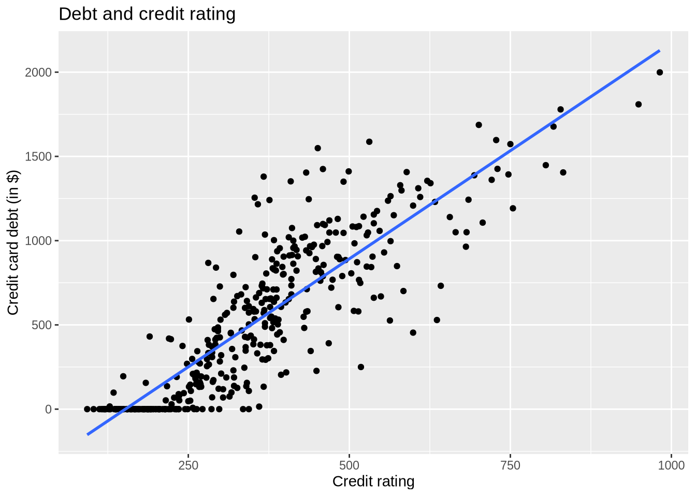
ggplot(credit_ch6, aes(x = age, y = debt)) +
geom_point() +
labs(
x = "Age (in year)", y = "Credit card debt (in $)",
title = "Debt and age"
) +
geom_smooth(method = "lm", se = FALSE)`geom_smooth()` using formula = 'y ~ x'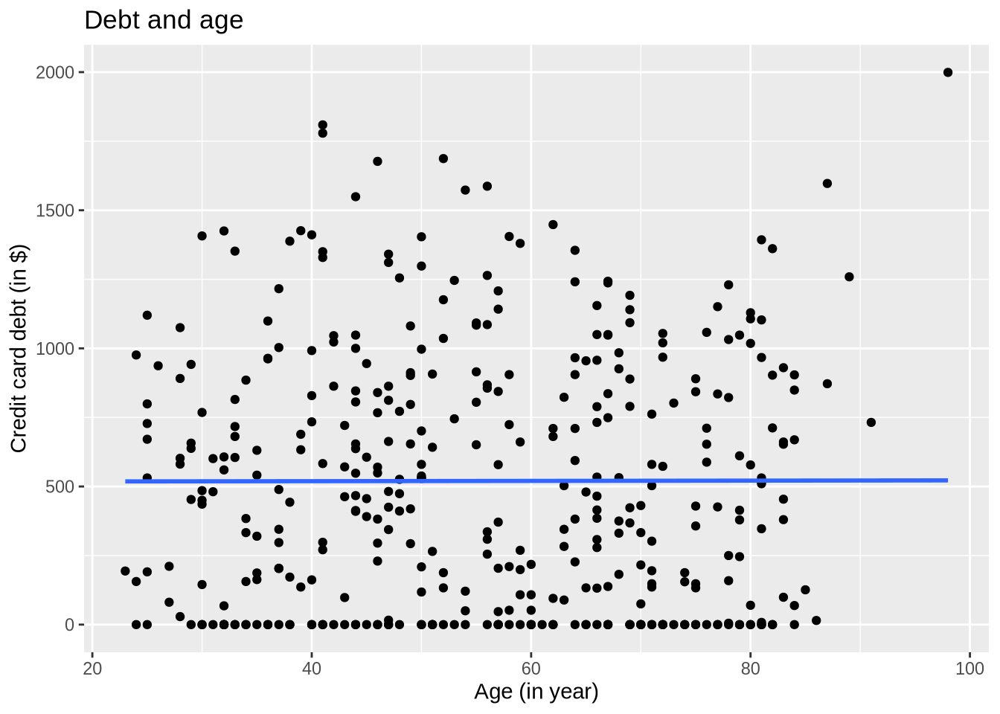
It seems that there is a positive relationship between one’s credit rating and their debt, and very little relationship between one’s age and their debt.
(LC6.3) Fit a new simple linear regression using lm(debt ~ credit_rating + age, data = credit_ch6) where credit_rating and age are the new numerical explanatory variables \(x_1\) and \(x_2\). Get information about the “best-fitting” regression plane from the regression table by applying the get_regression_table() function. How do the regression results match up with the results from your previous exploratory data analysis?
# Fit regression model:
debt_model_2 <- lm(debt ~ credit_rating + age, data = credit_ch6)
# Get regression table:
get_regression_table(debt_model_2)# A tibble: 3 × 7
term estimate std_error statistic p_value lower_ci upper_ci
<chr> <dbl> <dbl> <dbl> <dbl> <dbl> <dbl>
1 intercept -270. 44.8 -6.02 0 -358. -181.
2 credit_rating 2.59 0.074 34.8 0 2.45 2.74
3 age -2.35 0.668 -3.52 0 -3.66 -1.04The coefficients for both new numerical explanatory variables \(x_1\) and \(x_2\), credit_rating and age, are \(2.59\) and \(-2.35\) respectively, which means that debt and credit_rating are positively correlated, and debt and age are negatively correlated. This matches up with the results from your previous exploratory data analysis.
16.7 Chapter 7 Solutions
library(ggplot2)
library(dplyr)
library(moderndive)
library(gapminder)
library(skimr)
# Load virtual samples if they exist, otherwise they will be missing
if (file.exists("rds/virtual_samples_25.rds") &
file.exists("rds/virtual_samples_50.rds") &
file.exists("rds/virtual_samples_100.rds")) {
virtual_samples_25 <- read_rds("rds/virtual_samples_25.rds")
virtual_prop_red_25 <- virtual_samples_25 %>%
group_by(replicate) %>%
summarize(red = sum(color == "red")) %>%
mutate(prop_red = red / 25, n = 25)
virtual_samples_50 <- read_rds("rds/virtual_samples_50.rds")
virtual_prop_red_50 <- virtual_samples_50 %>%
group_by(replicate) %>%
summarize(red = sum(color == "red")) %>%
mutate(prop_red = red / 50, n = 50)
virtual_samples_100 <- read_rds("rds/virtual_samples_100.rds")
virtual_prop_red_100 <- virtual_samples_100 %>%
group_by(replicate) %>%
summarize(red = sum(color == "red")) %>%
mutate(prop_red = red / 100, n = 100)
virtual_prop <- bind_rows(
virtual_prop_red_25,
virtual_prop_red_50,
virtual_prop_red_100
)
}(LC7.1) Why was it important to mix the bowl before we sampled the balls?
Solution:
So that we make sure the sampled balls are randomized.
(LC7.2) Why is it that our 33 groups of friends did not all have the same numbers of balls that were red out of 50, and hence different proportions red?
Solution:
Because not all pairs have the same portion of the population of the balls, so each pair has a different sampled balls with different color compositions.
(LC7.3) Why couldn’t we study the effects of sampling variation when we used the virtual shovel only once? Why did we need to take more than one virtual sample (in our case 33 virtual samples)?
Solution:
If we use the virtual shovel only once, we only get one sample of the population. We need to take more than one virtual sample to get a range of proportions.
(LC7.4) Why did we not take 1000 “tactile” samples of 50 balls by hand?
Solution:
That would be way too much repeated work.
(LC7.5) Looking at Figure @ref(fig:samplingdistribution-virtual-1000), would you say that sampling 50 balls where 30% of them were red is likely or not? What about sampling 50 balls where 10% of them were red?
Solution:
According to the Figure, less than 150 out of the 1000 counts were 30% red. So I would say that sampling 50 balls where 30% of them were red is not very likely. Almost no count was only 10% red, so sampling 50 balls where 10% of them were red is extremely unlikely.
(LC7.6) In Figure @ref(fig:comparing-sampling-distributions), we used shovels to take 1000 samples each, computed the resulting 1000 proportions of the shovel’s balls that were red, and then visualized the distribution of these 1000 proportions in a histogram. We did this for shovels with 25, 50, and 100 slots in them. As the size of the shovels increased, the histograms got narrower. In other words, as the size of the shovels increased from 25 to 50 to 100, did the 1000 proportions
A. vary less,
B. vary by the same amount, or
C. vary more?
Solution:
A. As the histograms got narrower, the 1000 proportions varied less.
(LC7.7) What summary statistic did we use to quantify how much the 1000 proportions red varied?
- A. The inter-quartile range
- B. The standard deviation
- C. The range: the largest value minus the smallest.
Solution:
B. The standard deviation is used to quantify how much a set of data varies.
(LC7.8) In the case of our bowl activity, what is the population parameter? Do we know its value?
Solution:
The population parameter in the case of our bowl activity is the population proportion of the red balls in the bowl. Unless we know the exact number of red balls in the bowl, we won’t know the value of this population proportion.
(LC7.9) What would performing a census in our bowl activity correspond to? Why did we not perform a census?
Solution:
Performing a census in our bowl activity correspond to counting the total number of red balls in all balls, We did not perform a census because it would be too much repetitive work and it is unnecessary.
(LC7.10) What purpose do point estimates serve in general? What is the name of the point estimate specific to our bowl activity? What is its mathematical notation?
Solution:
Point estimates serve to estimate an unknown population parameter in the sample. In our bowl activity, our point estimate is the sample proportion: the proportion of the shovel’s balls that are red. We mathematically denote the sample proportion using \(\widehat{p}\).
(LC7.11) How did we ensure that our tactile samples using the shovel were random?
Solution:
We virtually shuffle the sample each time.
(LC7.12) Why is it important that sampling be done at random?
Solution:
So that we get different samples each time to estimate the total population.
(LC7.13) What are we inferring about the bowl based on the samples using the shovel?
Solution:
We are inferring that the samples are representing the total population in the ball.
(LC7.14) What purpose did the sampling distributions serve?
Solution:
Using the sampling distributions, for a given sample size \(n\), we can make statements about what values we can typically expect.
(LC7.15) What does the standard error of the sample proportion \(\widehat{p}\) quantify?
Solution:
Standard errors quantify the effect of sampling variation induced on our estimates.
(LC7.16) The table that follows is a version of Table @ref(tab:comparing-n-2) matching sample sizes \(n\) to different standard errors of the sample proportion \(\widehat{p}\), but with the rows randomly re-ordered and the sample sizes removed. Fill in the table by matching the correct sample sizes to the correct standard errors.
| Sample size | Standard error of $\widehat{p}$ |
|---|---|
| n = | 0.094 |
| n = | 0.045 |
| n = | 0.069 |
Solution:
\(n\) = \(25\), \(100\), \(50\) respectively.
For the following four learning checks, let the estimate be the sample proportion \(\widehat{p}\): the proportion of a shovel’s balls that were red. It estimates the population proportion \(p\): the proportion of the bowl’s balls that were red.
(LC7.17) What is the difference between an accurate estimate and a precise estimate?
Solution:
An accurate estimate gives an estimate that is close to, but not necessary the exact, actual value. A precise estimate gives the exact actual value.
(LC7.18) How do we ensure that an estimate is accurate? How do we ensure that an estimate is precise?
To ensure that an estimate is accurate, we need to have a reasonable range of estimate, and make sure that the estimate is reasonably close to the actual value. To ensure that an estimate is precise, we need to make sure the estimate is equivalent to the actual value.
(LC7.19) In a real-life situation, we would not take 1000 different samples to infer about a population, but rather only one. Then, what was the purpose of our exercises where we took 1000 different samples?
Solution:
To get a narrower range of the estimates.
(LC7.20) Figure @ref(fig:accuracy-vs-precision) with the targets shows four combinations of “accurate versus precise” estimates. Draw four corresponding sampling distributions of the sample proportion \(\widehat{p}\), like the one in the left-most plot in Figure @ref(fig:comparing-sampling-distributions-3).
Solution:
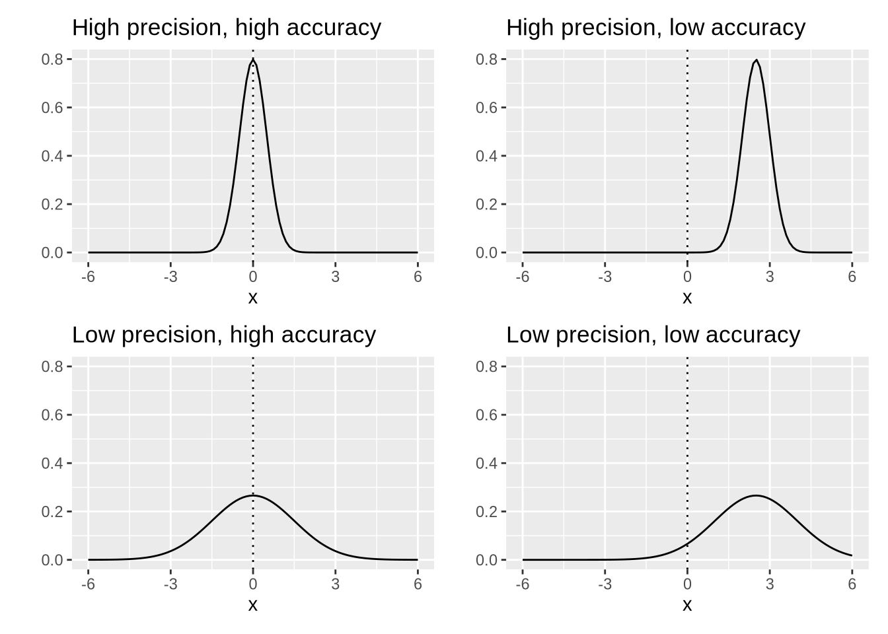
Comment on the representativeness of the following sampling methodologies:
(LC7.21) The Royal Air Force wants to study how resistant all their airplanes are to bullets. They study the bullet holes on all the airplanes on the tarmac after an air battle against the Luftwaffe (German Air Force).
Solution:
The airplanes on the tarmac after an air battle against the Luftwaffe is not a good representation of all airplanes, because the airplanes which were attacked in less resistant areas did not make it back to the tarmac. This is called survival bias. Survivor’s bias or survival bias is the logical error of concentrating on the people or things that made it past some selection process and overlooking those that did not, typically because of their lack of visibility. This can lead to false conclusions in several different ways. It is a form of selection bias.
(LC7.22) Imagine it is 1993, a time when almost all households had landlines. You want to know the average number of people in each household in your city. You randomly pick out 500 phone numbers from the phone book and conduct a phone survey.
Solution:
This is not a good representation, because: (1) adults are more likely to pickup phone calls; (2) households with more people are more likely to have people to be available to pickup phone calls; (3) we are not certain whether all households are in the phone book.
(LC7.23) You want to know the prevalence of illegal downloading of TV shows among students at a local college. You get the emails of 100 randomly chosen students and ask them, “How many times did you download a pirated TV show last week?”.
Solution:
This is not a good representation, because it is very likely that students will lie in this survey to stay out of trouble. So we may not get honest data. This is called volunteer bias: systematic error due to differences between those who choose to participate in studies and those who do not.
(LC7.24) A local college administrator wants to know the average income of all graduates in the last 10 years. So they get the records of five randomly chosen graduates, contact them, and obtain their answers.
Solution:
This is not a good representation, because the sample size is too small. The sample is representative but not precise.
16.8 Chapter 8 Solutions
library(tidyverse)
library(moderndive)
library(infer)(LC8.1) What is the chief difference between a bootstrap distribution and a sampling distribution?
Solution:
A bootstrap sample is a smaller sample that is “bootstrapped” from a larger sample. Bootstrapping is a type of resampling where large numbers of smaller samples of the same size are repeatedly drawn, with replacement, from a single original sample.
(LC8.2) Looking at the bootstrap distribution for the sample mean in Figure @ref(fig:one-thousand-sample-means), between what two values would you say most values lie?
Solution:
Most values lie in 1990 and 2000.
(LC8.3) What condition about the bootstrap distribution must be met for us to be able to construct confidence intervals using the standard error method?
Solution:
We can only use the standard error rule when the bootstrap distribution is roughly normally distributed.
(LC8.4) Say we wanted to construct a 68% confidence interval instead of a 95% confidence interval for \(\mu\). Describe what changes are needed to make this happen. Hint: we suggest you look at Appendix @ref(appendix-normal-curve) on the normal distribution.
Solution:
Thus, using our 68% rule of thumb about normal distributions from Appendix @ref(appendix-normal-curve), we can use the following formula to determine the lower and upper endpoints of a 95% confidence interval for \(\mu\):
\[\overline{x} \pm 1 \cdot SE = (\overline{x} - 1 \cdot SE, \overline{x} + 1 \cdot SE)\]
(LC8.5) Construct a 95% confidence interval for the median year of minting of all US pennies? Use the percentile method and, if appropriate, then use the standard-error method.
Solution:
Using the percentile method:
bootstrap_distribution <- pennies_sample %>%
specify(response = year) %>%
generate(reps = 1000) %>%
calculate(stat = "median")Setting `type = "bootstrap"` in `generate()`.percentile_ci <- bootstrap_distribution %>%
get_confidence_interval(level = 0.95, type = "percentile")
percentile_ci# A tibble: 1 × 2
lower_ci upper_ci
<dbl> <dbl>
1 1988 2000The standard-error method is not appropriate, because the bootstrap distribution is not bell-shaped:
visualize(bootstrap_distribution)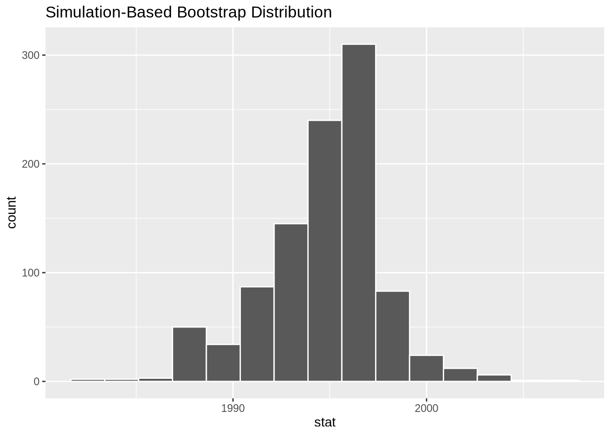
16.9 Chapter 9 Solutions
library(tidyverse)
library(infer)
library(moderndive)
library(nycflights13)
library(ggplot2movies)(LC9.1) Why does the following code produce an error? In other words, what about the response and predictor variables make this not a possible computation with the infer package?
library(moderndive)
library(infer)
null_distribution_mean <- promotions %>%
specify(formula = decision ~ gender, success = "promoted") %>%
hypothesize(null = "independence") %>%
generate(reps = 1000, type = "permute") %>%
calculate(stat = "diff in means", order = c("male", "female"))Solution: Because the decision outcome variable is categorical and we can’t compute a difference in means of a categorical variable. We can however compute the diff in props instead.
(LC9.2) Why are we relatively confident that the distributions of the sample proportions will be good approximations of the population distributions of promotion proportions for the two genders?
Solution:
Because the sample is representative of the population.
(LC9.3) Using the definition of p-value, write in words what the \(p\)-value represents for the hypothesis test comparing the promotion rates for males and females.
Solution:
The \(p\)-value represents for the likelihood that the true mean for the promotion rates for males and females in the population is the same.
(LC9.4) Describe in a paragraph how we used Allen Downey’s diagram to conclude if a statistical difference existed between the promotion rate of males and females using this study.
Solution:
We use the promotions dataset as the input for test statistic. The \(H_0\) model is “there is no difference between promotion rates of males and females”, and with the p-value from infer commands, we reject the \(H_0\) model and conclude that there is a statistical difference existed between the promotion rate of males and females.
(LC9.5) What is wrong about saying, “The defendant is innocent.” based on the US system of criminal trials?
Solution:
Failing to prove the defendant is guilty does not equal to proving that the defendant is innocent. There will always be the possibility of making errors in the trial.
(LC9.6) What is the purpose of hypothesis testing?
Solution:
The purpose of hypothesis testing is to determine whether there is enough statistical evidence in favor of a certain belief, or hypothesis, about a parameter. (source: https://personal.utdallas.edu/~scniu/OPRE-6301/documents/Hypothesis_Testing.pdf)
(LC9.7) What are some flaws with hypothesis testing? How could we alleviate them?
Solution:
The p-value’s 0.05 threshold can be misleading researchers to conduct multiple bootstrap tests to get a smaller p-value, therefore validating their statistical results. This threshold is relatively arbitrary (if a p-value is 0.051, does it mean there is no statistical significance?), and trusting it too much may lead to imprecise conclusions. To alleviate this problem, keep in mind that having a smaller p-value can be the result of a “lucky” sampling that is not truly representative, and do multiple bootstrap samplings for hypothesis testing before concluding.
(LC9.8) Consider two \(\alpha\) significance levels of 0.1 and 0.01. Of the two, which would lead to a more liberal hypothesis testing procedure? In other words, one that will, all things being equal, lead to more rejections of the null hypothesis \(H_0\).
Solution:
The greater \(\alpha\) of 0.1 will lead to a more liberal hypothesis testing procedure, because the required p-value to reject the null hypothesis \(H_0\) can be greater. There is a higher chance that the p-value will be less than \(\alpha\).
(LC9.9) Conduct the same analysis comparing action movies versus romantic movies using the median rating instead of the mean rating. What was different and what was the same?
Solution:
library(moderndive)
library(infer)
# In calculate() step replace "diff in means" with "diff in medians"
null_distribution_movies_median <- movies_sample %>%
specify(formula = rating ~ genre) %>%
hypothesize(null = "independence") %>%
generate(reps = 1000, type = "permute") %>%
calculate(stat = "diff in medians", order = c("Action", "Romance"))
# compute observed "diff in medians"
obs_diff_medians <- movies_sample %>%
specify(formula = rating ~ genre) %>%
calculate(stat = "diff in medians", order = c("Action", "Romance"))
obs_diff_medians
# Visualize p-value. Observing this difference in medians under H0
# is very unlikely! Suggesting H0 is false, similarly to when we used
# "diff in means" as the test statistic.
visualize(null_distribution_movies_median, bins = 10) +
shade_p_value(obs_stat = obs_diff_medians, direction = "both")
# p-value is very small, just like when we used "diff in means"
# as the test statistic.
null_distribution_movies_median %>%
get_p_value(obs_stat = obs_diff_medians, direction = "both")(LC9.10) What conclusions can you make from viewing the faceted histogram looking at rating versus genre that you couldn’t see when looking at the boxplot?
Solution:
From the faceted histogram, we can also see the comparison of rating versus genre over each year, but we cannot conclude them from the boxplot.
(LC9.11) Describe in a paragraph how we used Allen Downey’s diagram to conclude if a statistical difference existed between mean movie ratings for action and romance movies.
Solution:
We use the movies_sample dataset as the input for test statistic. The \(H_0\) model is “there is no statistical difference existed between mean movie ratings for action and romance movies”, and with the p-value from infer commands, we fail to reject the \(H_0\) model and conclude that there is insufficient evidence to conclude that a statistical difference existed between mean movie ratings for action and romance movies.
(LC9.12) Why are we relatively confident that the distributions of the sample ratings will be good approximations of the population distributions of ratings for the two genres?
Solution:
Because the sample is representative of the population.
(LC9.13) Using the definition of \(p\)-value, write in words what the \(p\)-value represents for the hypothesis test comparing the mean rating of romance to action movies.
Solution:
The \(p\)-value represent the probability that the difference between mean movie ratings for action and romance movies in the sample is natural, i.e., the probability that there is no statistical difference between mean movie ratings for action and romance movies in the population.
(LC9.14) What is the value of the \(p\)-value for the hypothesis test comparing the mean rating of romance to action movies?
Solution:
The \(p\)-value here is \(0.004\).
(LC9.15) Test your data wrangling knowledge and EDA skills:
- Use
dplyrandtidyrto create the necessary data frame focused on only action and romance movies (but not both) from themoviesdata frame in theggplot2moviespackage. - Make a boxplot and a faceted histogram of this population data comparing ratings of action and romance movies from IMDb.
- Discuss how these plots compare to the similar plots produced for the
movies_sampledata.
Solution:
- Use
dplyrandtidyrto create the necessary data frame focused on only action and romance movies (but not both) from themoviesdata frame in theggplot2moviespackage.
action_romance <- movies %>%
select(title, year, rating, Action, Romance) %>%
filter((Action == 1 | Romance == 1) & !(Action == 1 & Romance == 1)) %>%
mutate(genre = ifelse(Action == 1, "Action", "Romance"))Note above:
- In the
filter()command that(Action == 1 | Romance == 1)picks out the movies that are either action or romance while the!(Action == 1 & Romance == 1)leaves out the movies that are classified as both. - In the
mutate()we useifelse()to create a new variablegenrewhose values are either"Action"or"Romance".
- Make a boxplot and a faceted histogram of this population data comparing ratings of action and romance movies from IMDb.
ggplot(action_romance, aes(rating)) +
geom_histogram() +
facet_wrap(~genre)`stat_bin()` using `bins = 30`. Pick better value `binwidth`.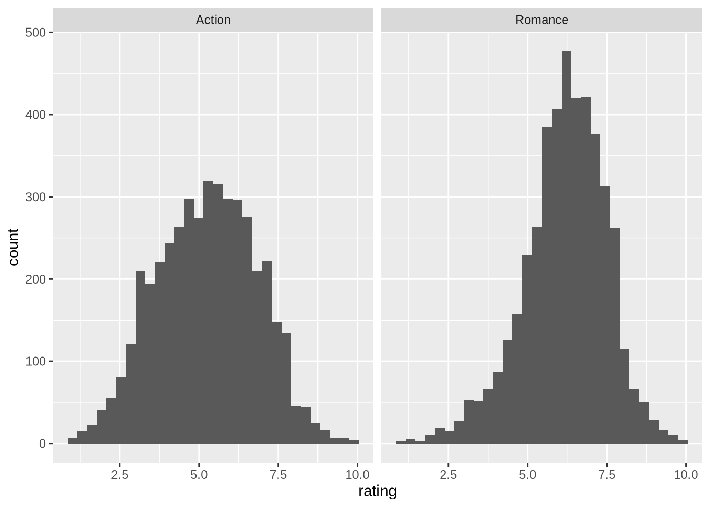
16.10 Chapter 10 Solutions
library(tidyverse)
library(moderndive)
library(infer)(LC10.1) Continuing with our regression using age as the explanatory variable and teaching score as the outcome variable.
- Use the
get_regression_points()function to get the observed values, fitted values, and residuals for all 463 instructors.
evals_ch5 <- evals %>%
select(ID, score, bty_avg, age)
# Fit regression model:
score_age_model <- lm(score ~ age, data = evals_ch5)
# Get regression points:
regression_points <- get_regression_points(score_age_model)
regression_points# A tibble: 463 × 5
ID score age score_hat residual
<int> <dbl> <int> <dbl> <dbl>
1 1 4.7 36 4.25 0.452
2 2 4.1 36 4.25 -0.148
3 3 3.9 36 4.25 -0.348
4 4 4.8 36 4.25 0.552
5 5 4.6 59 4.11 0.488
6 6 4.3 59 4.11 0.188
7 7 2.8 59 4.11 -1.31
8 8 4.1 51 4.16 -0.059
9 9 3.4 51 4.16 -0.759
10 10 4.5 40 4.22 0.276
# ℹ 453 more rows- Perform a residual analysis and look for any systematic patterns in the residuals. Ideally, there should be little to no pattern but comment on what you find here.
The first condition is that the relationship between the outcome variable \(y\) and the explanatory variable \(x\) must be Linear.
`geom_smooth()` using formula = 'y ~ x'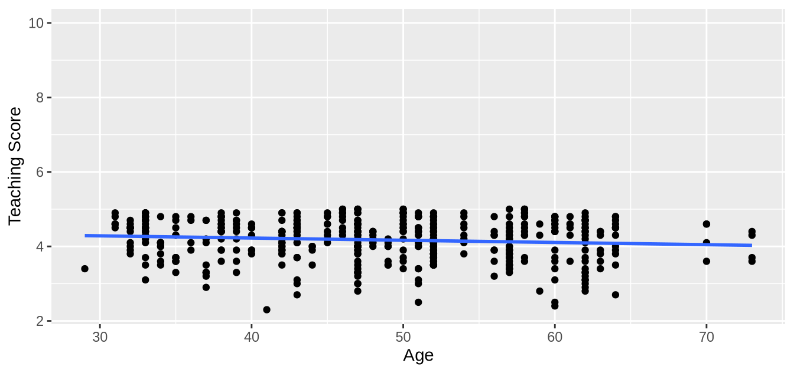
The relationship between score and age does not seem to be linear.
The second condition is that the residuals must be Independent. In other words, the different observations in our data must be independent of one another. As explained in @ref(independence-of-residuals), “we say there exists dependence between observations”.
The third condition is that the residuals should follow a Normal distribution.
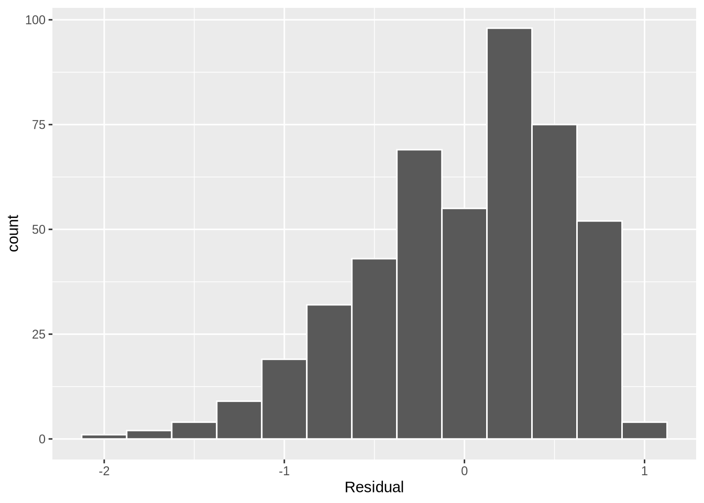
The fourth and final condition is that the residuals should exhibit Equal variance across all values of the explanatory variable \(x\). In other words, the value and spread of the residuals should not depend on the value of the explanatory variable \(x\).
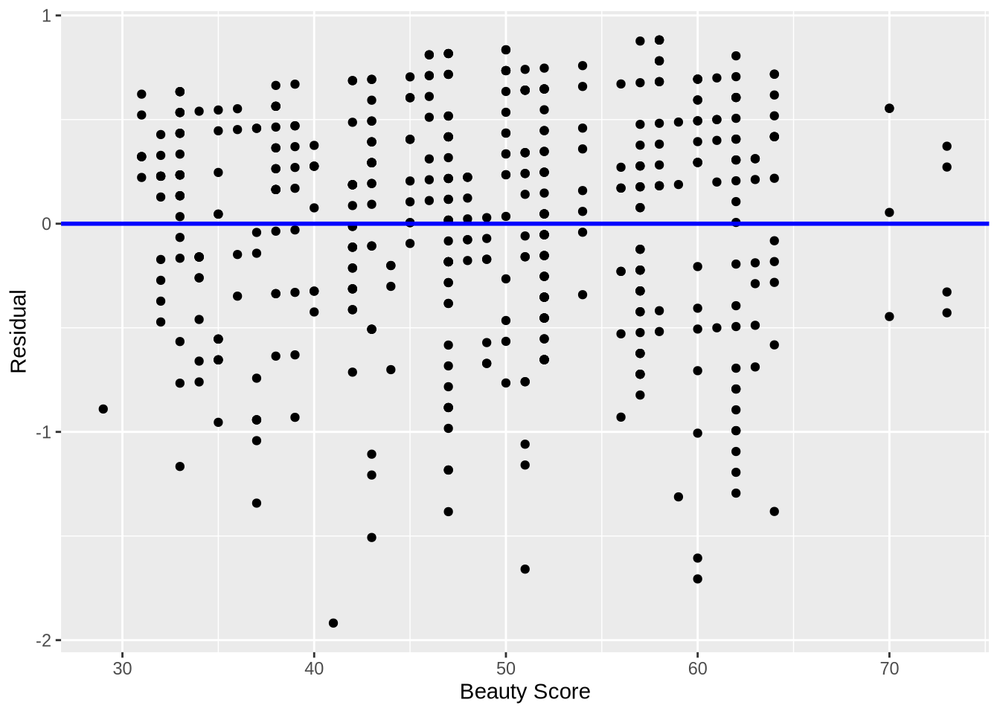
This plot seems to fit equality of variance.
(LC10.2) Repeat the inference but this time for the correlation coefficient instead of the slope. Note the implementation of stat = "correlation" in the calculate() function of the infer package.
bootstrap_distn_slope <- evals_ch5 %>%
specify(formula = score ~ bty_avg) %>%
generate(reps = 1000, type = "bootstrap") %>%
calculate(stat = "correlation")
if (!file.exists("rds/bootstrap_distn_slope.rds")) {
set.seed(76)
bootstrap_distn_slope <- evals %>%
specify(score ~ bty_avg) %>%
generate(reps = 1000, type = "bootstrap") %>%
calculate(stat = "slope")
saveRDS(
object = bootstrap_distn_slope,
"rds/bootstrap_distn_slope.rds"
)
} else {
bootstrap_distn_slope <- readRDS("rds/bootstrap_distn_slope.rds")
}
observed_slope <- evals %>%
specify(score ~ bty_avg) %>%
calculate(stat = "correlation")
observed_slope16.11 Chapter 11 Solutions
library(tidyverse)
library(moderndive)
library(skimr)
library(fivethirtyeight)(LC11.1) Repeat the regression modeling in Subsection @ref(house-prices-regression) and the prediction making you just did on the house of condition 5 and size 1900 square feet in Subsection @ref(house-prices-making-predictions), but using the parallel slopes model you visualized in Figure @ref(fig:house-price-parallel-slopes). Show that it’s $525,191!
house_prices <- house_prices %>%
mutate(
log10_price = log10(price),
log10_size = log10(sqft_living)
)
# Fit regression model:
price_interaction <- lm(log10_price ~ log10_size + condition,
data = house_prices
)
# Get regression table:
get_regression_table(price_interaction)
10^(2.88 + 0.096 + 0.837 * log10(1900))(LC11.2) What date between 1994 and 2003 has the fewest number of births in the US? What story could you tell about why this is the case?
US_births_1994_2003 %>%
arrange(births)# A tibble: 3,652 × 6
year month date_of_month date day_of_week births
<int> <int> <int> <date> <ord> <int>
1 2001 12 25 2001-12-25 Tues 6443
2 2000 12 25 2000-12-25 Mon 6566
3 2003 12 25 2003-12-25 Thurs 6628
4 2002 12 25 2002-12-25 Wed 6629
5 1999 12 25 1999-12-25 Sat 6674
6 2000 12 24 2000-12-24 Sun 6801
7 1995 12 24 1995-12-24 Sun 6999
8 2002 4 7 2002-04-07 Sun 7008
9 2002 3 31 2002-03-31 Sun 7019
10 1998 12 25 1998-12-25 Fri 7020
# ℹ 3,642 more rowsThe dates with the fewest number of births in the US were 12/25 of the years of 2001, 2000, 2003, 2002, and 1999. Because it is Christmas Day and hospitals don’t generally induce labor on that day.
16.12 Appendix A2 Solutions
(LCA2.1) What proportion of the area under the normal curve is less than 3? Greater than 12? Between 0 and 12?
- Less than 3: 3 is one standard deviation less than the mean of 6, since \(\frac{3 - \mu}{\sigma} = \frac{3-6}{3} = -1\). Thus we compute the area to the left of z = -1 in Figure @ref(fig:normal-rule-of-thumb): 0.15% + 2.35% + 13.5% = 16%.
- Greater than 12: 12 is two standard deviations greater than the mean of 6, since \(\frac{12 - \mu}{\sigma} = \frac{12-6}{3} = +2\), we compute the area to the right of z = +2 in Figure @ref(fig:normal-rule-of-thumb): 2.35% + 0.15% = 2.5%.
- Between 0 and 12: 0 is two standard deviations less than the mean of 6, since \(\frac{0 - \mu}{\sigma} = \frac{0-6}{3} = -2\). Thus we compute the area between z = -2 and z = +2 in Figure @ref(fig:normal-rule-of-thumb): 13.5% + 34% + 34% + 13.5% = 95%.
(LCA2.2) What is the 2.5th percentile of the area under the normal curve? The 97.5th percentile? The 100th percentile?
- 2.5th percentile: Starting from the left of Figure @ref(fig:normal-rule-of-thumb), since 0.15% + 2.35% = 2.5%, the 2.5th percentile is z = - 2. However, this is in standard units. Thus we need the value in the normal distribution that is two standard deviations lower than the mean: \(\mu - 2 \cdot\sigma = 6 - 2 \cdot 3 = 0\).
- 97.5th percentile: Starting from the left of Figure @ref(fig:normal-rule-of-thumb), since 0.15% + 2.35% + 13.5% + 34% + 34% + 13.5% = 97.5%, the 97.5th percentile is z = +2. However, this is in standard units. Thus we need the value in the normal distribution that is two standard deviations higher than the mean: \(\mu + 2 \cdot\sigma = 6 + 2 \cdot 3 = 12\).
- 100th percentile: \(+\infty\). In other words, 100% of values will be less than positive infinity.